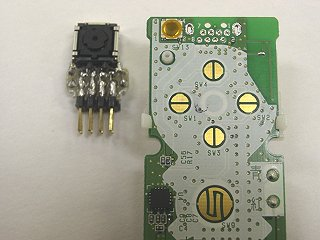
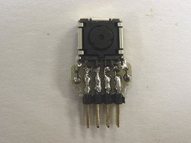
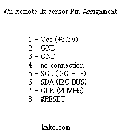
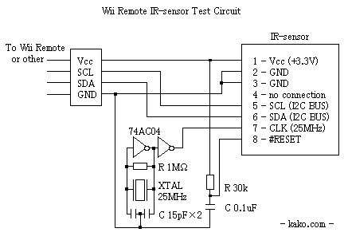
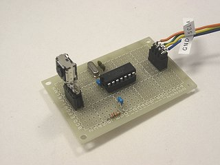
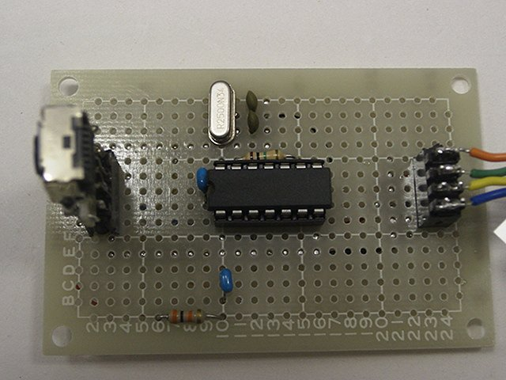
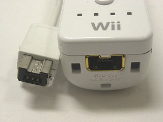
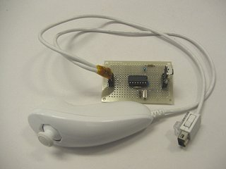
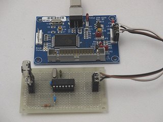

Original text
Contribute a better translation
Small story 2007-001
Analysis of infrared sensor parts for pointing of Wii remote controller
I removed the infrared CMOS sensor from the board inside the remote control and attached an 8-pin (4 pin x 2 rows) connector.

First of all, I examined the function of these eight pins. The results are as follows.

Pin 1 is on the upper right side of the board in the photo above, and the pins are arranged in a staggered pattern.
(Added at a later date 2007.1.31 Pin 4 seems to be a #CE signal)
Next, I made my own circuit and examined it to see if the IR sensor works as described above.

(Added at a later date 2007.1.31 Pin 4 is a #CE signal, so it should be dropped to GND.)

Photo of the circuit actually assembled
Vcc, SCL, SDA, from the board inside the Wii remote controller with
the IR sensor removed. I pulled out only the four wires of GND and
connected it to this circuit.
When I tried to operate the remote control with it connected, I could confirm that the IR sensor worked as before.
By the way, it turned out that the I2C signal is also output to the expansion port of the Wii remote controller. I also use the I2C bus to communicate with Nunchaku and classic controllers.
I2C can also be used for hot-swap, so it seems that it can also be used for this purpose.
Expansion Port Pin for Nunchaku / Classic Controller
1 --Vcc
2 --SCL 3-1
and continuity (for connector connection detection)
4 --nc 5
--SDA 6
--GND
(No. 4 is not connected to Nunchaku or Classic Controller, but
remote control side Is a circuit like a power supply. Is it a power
supply for Rumble Pak? It may be installed by relaying between the
Clacon and the Wii remote control.)

Cut the cable of the Nunchaku controller in the middle
(Wii ) Remote control w / o IR sensor) → (self-made IR sensor board & relay connector) → (Nunchaku controller)
By connecting the IR sensor board to the expansion port, remove the IR
sensor from the Wii remote control and IR outside the remote control I
was able to operate the sensor function.
If pin 3 of the expansion port is detected, the Wii remote controller
freezes if you cut the cable in the middle so that the nunchaku
controller cannot be connected. To prevent it from freezing, connect in the form of relaying as described above. (Added
at a later date 2007.1.30 The fact that it freezes when the 1st and 3rd
pins of the expansion port are made conductive did not reproduce when I
tried it again. Probably due to a work mistake, the other signals were
shorted and frozen. It seems that
it is possible to connect to the expansion port of the Wii remote
controller if it is a device that can be connected by the I2C bus, not
limited to the IR sensor. In this case, it seems possible to make a self-made peripheral device that expands the Wii remote controller.
In other words:
・ Application of expansion port 1 ... You can connect some I2C device
to the signal line of I2C and operate your own peripheral device.
・ Application of expansion port 2 ... Connect the remote controller
to the PC and put it in a command waiting state, connect the I2C signal
line to another master, and access the EEPROM, which is the I2C device
inside the remote controller, from outside the remote controller. can
do.
There is an EEPROM connected to the I2C bus inside the remote controller. It records Bluetooth ID and Mii data. Although
it is unconfirmed information so far, it seems that something like a
binary that seems to be loaded and executed by the CPU of the Wii remote
controller is recorded in the EEPROM, so if this is true, any code will
be the Wii remote controller by rewriting the EEPROM. A hack that can
be run above may be possible. This EEPROM can be read using the expansion port by the method of application 2 above, but it is difficult to rewrite. Even via Bluetooth, the address behind the EEPROM is locked so that it cannot be read or written. It seems impossible to do anything other than disassembling the remote control, removing the EEPROM, and rewriting it directly.
Next, I tried connecting the self-made IR sensor board to other I2C master devices instead of the Wii remote controller.
If I write the conclusion first, I was able to send and receive
commands to the IR sensor and detect infrared light sources such as the
sensor bar like the Wii remote controller. (2007.1.25)
In order to use the I2C bus on the PC, I used a peripheral device called USB-I2CIO from DeVaSys. Connects to a PC via USB and functions as an I2C master device. It also has a general-purpose I / O function.

For the wiring, 4 wires of Vcc (3.3V), GND, SCL, SDA were connected as they were. When I actually operated it (MPEG1 format video download 2.0MB) I downloaded
a library for controlling USB-I2CIO from the DeVaSys website in C
language, and used that library to connect to an infrared sensor on the
I2C bus. I made my own software to send and receive commands.
(I don't think there are any people who will use the software even if
it is released. If there is a request from a person who made the board
in the same way, it may be distributed individually. For the time being,
the code is being organized) (2007.2.2 Wii -I made a Tenkey [wii number pad].) (2007.2.7 I made a Wii-Gyro .)
(Added at a later date 2008-2-22 I got and used REX-USB61 as an I2C I /
F that can be obtained in Japan. For the time being, I rewrote the part
that calls the library and the same software came to work. I haven't
been able to organize the code as usual. It's not completely left
unattended, and it's still in progress.)
(Added later)
The circuit and software for connecting to the ATMEL AVR microcomputer were released .
(Added at a later date 2013-12)
It seems that the IR sensor inside the Wii remote controller is different from before. I disassembled it and examined it. (2013-12-24)